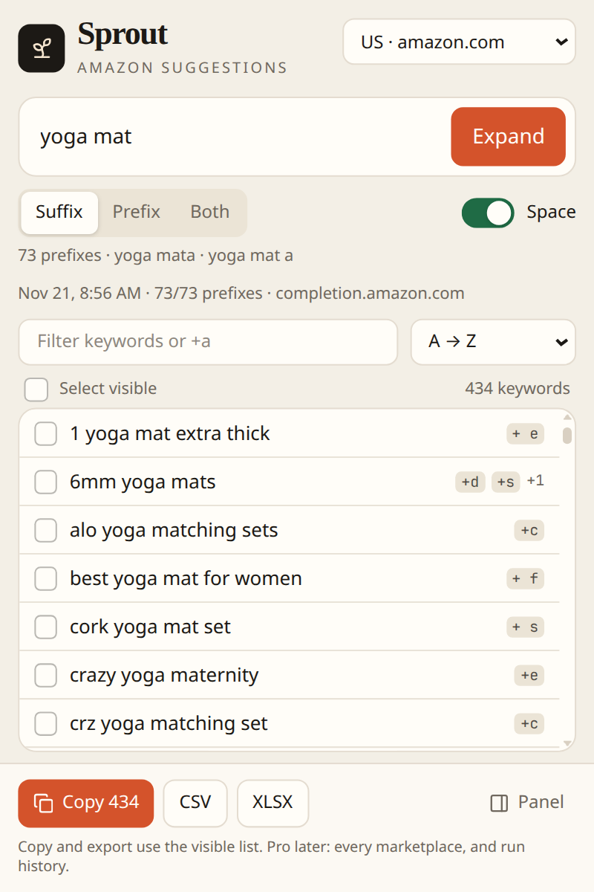

See it in action
What both tools are trying to do
Amazon’s search box usually shows about ten autocomplete suggestions. An expander asks that same public suggestion list for your seed plus extra letters, digits, or short connector words, then shows a longer, deduplicated list of phrases shoppers actually type.
That list is useful for listing copy, KDP keyword boxes, Backend Search Terms, and ads. It is not, by itself, a measure of demand. Search volume is a different dataset, and Sprout does not pretend to have it.

Public facts about AMZ Suggestion Expander
AMZ Suggestion Expander is a Chrome extension from Raybek Solutions. Its Chrome Web Store listing says it expands the suggestions shown in the Amazon search bar by showing keywords Amazon would suggest before and after the words you entered, and that it works in the US, CA, MX, UK, DE, FR, IT, AU, and ES markets. On 21 November 2026 the listing showed version 2.1.53, last updated 17 August 2026, and a rating of 2.6 from 109 ratings.
Chrome-Stats, ingesting the same store listing, reported 200,000 users, a 2.60 rating from 109 ratings, and those same version and date figures (data as of 21 November 2026).
Chrome-Stats also publishes a short review summary. It says the most repeated complaint is that the extension often fails to work or show results (blank results, the tool stopping, or an inactive toolbar icon). It also says users frequently criticize a restricted free version and prompts to subscribe to Pro, while some reviewers still find the suggestions useful. That is a summary of public reviews, not a test of every copy of the extension.
What the free tier and Pro include, according to the publisher
The store listing’s update notes for version 2.1.53 describe Pro features: a Backend Search Terms builder, saved keywords, a 12-month trend chart, a keyword table with XLSX or CSV download, copy to clipboard, and exclude words.
The publisher’s own Pro page, checked on 21 November 2026, is more explicit. The free tier includes expanded suggestions and grouped columns (Before / After / Between / Other) on those nine marketplaces. Pro adds estimated monthly search volume, trend and buyer-intent scores (described there as English keywords only), spreadsheet export, a common-words analysis, the Backend Search Terms builder, saved keywords, exclude words, and copy to clipboard. The same page listed Pro at $9.97 a month or $59.97 a year, with a seven-day trial that requires a payment method. Confirm any price on that page before you pay; this article does not set it.
Sprout is not claiming that Pro “does not work” or that its volume numbers are false. Some public reviews, as summarized by Chrome-Stats, do say the volume data felt inaccurate or that downloading keywords was limited. If estimated volume is the reason you would pay, judge that data yourself.
What Sprout offers instead
Sprout is a free Chrome and Brave extension. There is no account, no payment, and no Sprout server. Autocomplete requests go from your browser to Amazon. Seeds, results, stars, and the last 20 runs stay in chrome.storage.local on this device. The source is public (MIT).
Type a seed and expand it across letters and digits, with or without a space, and with optional connector words such as for, with, and, and without. You can run one marketplace or several, and you can limit suggestions to a department such as Books or Kindle. Filter the list, star rows, exclude words, and export CSV, XLSX, or an Amazon Ads bulk sheet (Campaign, Ad Group, Keyword, Match Type). A Backend Search Terms builder counts bytes toward the usual 249-byte field. KDP mode fills seven boxes of 50 characters and skips words already in the title or subtitle.
Sprout does not estimate search volume, cost per click, trends, or sales. The Words tab counts how often a word or pair appears in the current suggestion list — frequency, not volume. You can ask for Amazon’s on-page result count on selected rows; the label says result count, not search volume. A robot check stops that queue.

Side by side
| Topic | AMZ Suggestion Expander | Sprout |
|---|---|---|
| Price | Free tier; Pro listed at $9.97/month or $59.97/year on the publisher’s site, checked 21 November 2026 | Free |
| Account or server | Pro is sold on the publisher’s site; the extension also has host access to raybeksolutions.com, per Chrome-Stats | No Sprout account and no Sprout server |
| Autocomplete expansion | Yes, keywords before and after the seed, per the store listing | Yes, seed plus letters, digits, and optional connectors; prefix or suffix |
| Marketplaces named | Nine: US, CA, MX, UK, DE, FR, IT, AU, ES | Twenty-two storefronts, including India, Japan, Brazil, and several EU stores |
| CSV / XLSX export | Pro, per the publisher’s Pro page | Included |
| Backend Search Terms, exclusions, saved keywords | Pro, per the publisher’s Pro page and the v2.1.53 store notes | Included |
| Estimated search volume and trends | Pro, English keywords only, per the publisher’s Pro page | Not offered, and not invented |
| KDP 7×50 boxes | Not described on the store listing or Pro page we checked | Included |
| Users and rating (21 November 2026) | 200,000 users; 2.60 from 109 ratings, per Chrome-Stats and the Chrome Web Store | First public store versions listed on 21 November 2026; still early |
| License | Proprietary | Open source (MIT) |
Sources: the AMZ Suggestion Expander store listing, Chrome-Stats, and raybeksolutions.com/asepro/, all checked on 21 November 2026. Sprout facts come from the Sprout store listing and the source repository.
Which one to use
Choose AMZ Suggestion Expander if you already rely on it, or if you want the publisher’s estimated search volume and trend charts and are willing to pay for Pro. Those estimates are their product; Sprout cannot match them without a data source, and it will not invent a substitute.
Choose Sprout if you want the autocomplete list itself, with export, exclusions, Backend Search Terms, and a KDP builder, without an account or a paid plan. It is a new listing. If a marketplace returns no suggestions, please open a GitHub issue with the store and the seed.
Other expanders exist, including tools that add their own volume estimates and require a login. This page is only a comparison with AMZ Suggestion Expander.
How to try Sprout
- Install it from the Chrome Web Store. It also loads in Brave.
- Open Amazon, type a seed in Sprout, pick a marketplace, and press Expand.
- Filter or exclude words, then copy the list or download CSV, XLSX, or an Ads bulk sheet.
A longer walkthrough is in Free Amazon keyword research with autocomplete. KDP authors may want the 7×50 keyword workflow.
Frequently asked questions
Is Sprout a free AMZ Suggestion Expander alternative?
Yes. Both tools expand Amazon’s public autocomplete suggestions. Sprout is free and open source, with no account and no Sprout server. Export, Backend Search Terms, exclusions, and saved keywords are included without a paid plan. Sprout does not estimate search volume, CPC, trends, or sales.
Does AMZ Suggestion Expander cost money?
The Chrome extension has a free tier. The publisher’s Pro page (checked 21 November 2026) lists Pro at $9.97 a month or $59.97 a year, and places export, estimated search volume, Backend Search Terms, saved keywords, and exclusions in Pro.
Why is AMZ Suggestion Expander rated 2.6?
On 21 November 2026, Chrome-Stats reported a 2.60 rating from 109 Chrome Web Store ratings, with about 200,000 users. Chrome-Stats’ review summary says the most repeated complaint is that the extension often fails to work or show results, and that reviewers also criticize a limited free version and prompts to subscribe to Pro. Those are summaries of public reviews, not a claim about every install.
Does Sprout show Amazon search volume?
No. Sprout has no source for search volume, cost per click, trends, or sales, and it does not invent those numbers. It can show how often a word appears in the current suggestion list, and it can read Amazon’s on-page result count for rows you select. Both are labeled as such.
Which Amazon marketplaces does each tool list?
AMZ Suggestion Expander’s Chrome Web Store listing names US, CA, MX, UK, DE, FR, IT, AU, and ES. Sprout’s listing names 22 storefronts, including those nine plus India, Japan, Brazil, the Netherlands, Sweden, Poland, and others listed on the store page.